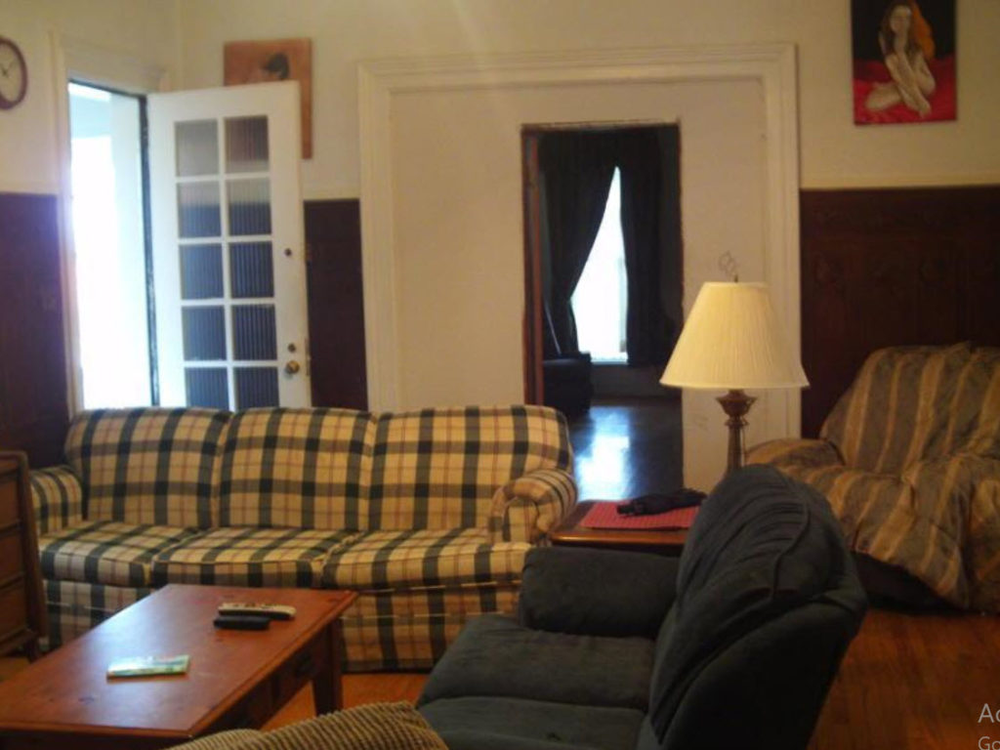
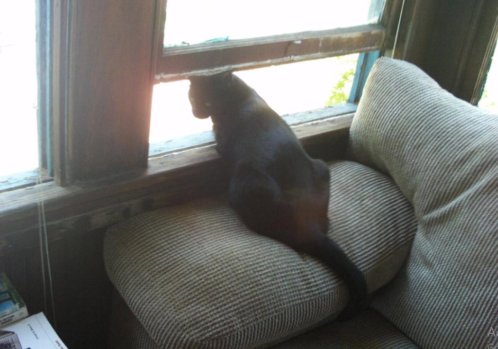

Background
While my story is filled with all sorts of issues and elements, this particular article will discuss a time in my life where I was in the “Parole System”.
When I was “retired” from three decades in the MAJ (which is a branch of the ONI) under the United States department of the Navy, I was placed under the control of the Arkansas state prison system. Also known as “the ADC”. And under that system, I was accused, tried, convicted, and sent off to be a “sex offender” working at hard labor.
I spent roughly two years in the hot Arkansas sun and then was granted parole. This is the story of that brief period of time. Roughly two years in duration, before I returned back to the ADC to finish my sentence
My story
In my darkest days while I was still in the Prison system, I was granted parole under very rigid limitations on everything that I could do. Parole is a good thing. We all wanted it. It was the “rehabilitation” portion of our prison sentence. While “hard labor” was the punishment phase.
Parole can ONLY be granted to a relative or a close friend (with no criminal background). Barring that, you can be sent to a “half way” house. That is, as long as you are not a “sex offender”.
Quick Tip Half-way houses, religious organizations (that accept federal funding), state organizations, or private organizations (that accept state funding) are barred from accepting "sex offenders".
I had one option. My father.
And he gladly took on that role, and welcomed me into his house. He did so under the objections of my step-mother who grudgingly went along with the arrangement.
Terms of Parole
Under parole my freedom was severely curtailed.
I couldn’t have a cell phone, or be near one. I couldn’t go to a restaurant that served alcohol, nor could I apply for a job that had access to a telephone, computer, printer, or camera. And I couldn’t watch any movies unless it was “G” rated. Any violations would cause me to go right back to prison.
It’s very difficult as a “sex offender” because not only are you a undesirable felon, but the non-stop anti sex offender barrage on the media turned you into a shunned leper.
Things fell apart
After about four months living at my long-retired father’s house (He was in his late 70’s at the time.), his wife (my step mother) decided that I was a “grown adult” and kicked me out of the house. I tried to explain that my parole was contingent on living with my father. But she didn’t care. She no longer wanted me there.
I was part of his “old life” and his “old wife” and I was a constant reminder of that.
She would have no part of it.
My father, and you know I must give him credit, put up a cursory defense on my behalf. But the situation was unstable, and I was escorted out of the house with my meager belongings in a small suitcase.
I was kicked out on Christmas eve. (Again, long time MM readers will recognize the significance of this event.) And that is how I spent my Christmas in 2007.
Not just losing my jobs on Christmas eve, over and over, and over again, but also getting kicked out of the house as well. Sigh.
Some background For those of you who are unaware, it just seemed that the preferred date to lay me off from work in industry was right before Christmas. This included Delco Electronics, Magnavox, Poulan Weedeater, Pollak, Grote, Guardian Glass, and Holmes Products. To quote "John McClain" from the "Die Hard" series of movies. "What are the odds?"
Aside from being a total dick about the entire thing, she made pronouncements that she wanted me to rot in prison, get raped in prison, and have my life totally and utterly destroyed. And that she hoped that she could make this happen personally.
I well remember telling her that “Oh, you are just angry. You don’t mean what you are saying.”
To which she replied. “Oh, yes I do. I know exactly what I am saying and exactly what I want.”
(To make a long story short) I ended up in a “flop house” for until after Christmas when the Parole staff could deal with my case.
Flophouse. Any house/apartment/ frat house /trailer/etc. which is used for individuals to crash (sleep, chill, hang out, lurk, etc.) for a period of time. In order to "crash", one must not actually live there (e.g. have their name on the lease, own said flophouse, etc.). Flophouses are typically used by college students, drug addicts, transients, vagrants, or other unsavory characters.
The entire staff at the parole office were all celebrating the holidays, don’t you know.
So I had to wait in a limbo state. Locked in a room. I called the 1-800 hot line which instructed me to go to the designated address and stay inside the room and do not leave for any reason until they would get back to work after the holiday.
Eventually they came back from holiday. Picked me up in a van, and hauled me off to a monastery to live.
A monastery is a building or complex of buildings comprising the domestic quarters and workplaces of monastics, monks or nuns, whether living in communities or alone. A monastery generally includes a place reserved for prayer which may be a chapel, church, or temple, and may also serve as an oratory, or in the case of communities anything from a single building housing only one senior and two or three junior monks or nuns, to vast complexes and estates housing tens or hundreds. A monastery complex typically comprises a number of buildings which include a church, dormitory, cloister, refectory, library, balneary and infirmary, and outlying granges. Depending on the location, the monastic order and the occupation of its inhabitants, the complex may also include a wide range of buildings that facilitate self-sufficiency and service to the community. These may include a hospice, a school, and a range of agricultural and manufacturing buildings such as a barn, a forge, or a brewery. -Wikipedia
Actually, it was a really good thing. But at the time I knew nothing about it and was petrified.
A talk with my father
Anyways, my father came to visit me while I sat alone in that bare hotel room. All the light bulbs were burnt out, so I opened the blinds to let the street light illuminate the room.It was a pretty dismal hotel room. It had a very tiny commode in the corner with a beaded curtain separating it from the room, and a old black and white television with “rabbit ears” on the top that didn’t work.
My father sat down on the lumpy bed while I sat on the low 1940’s style chair with mattress springs that jut up from below. He tried to explain his situation, while acknowledging (all the time repeatedly) that his wife was being a horrible bitch to me. But really, he was old and really wasn’t able to handle all the discord.
I understood his situation.
I really did.
This was his life, his family, and I was not wanted by his wife, and he (at his age) did not need the strife and aggravation.
But, I did tell him the truth. I told him what the parole officers told me. that he was incapable of being a “guardian” for me during parole. That he was not behaving like a father. That they were not behaving like a functional family, and there was no way that that environment was healthy for me.
He failed.
He lied to the parole board.
He promoted himself as a good father, and a loving and nurturing home for me to recover and start the long road towards rehabilitation. But the parole office disagreed. Real functional families do not kick family members out of the house, and they most certainly do not do so under the conditions and situation that I was in. Frankly, I was a “basket case”. You don’t go from white-collar professional to slave laborer in the deep South surrounded with urban blacks, SA’s and other misfits of society.
Basketcase informal : a person who is functionally incapacitated from extreme nervousness, emotional distress, mental or physical overwork, etc.
And he didn’t like to hear it, and told me that he was going to have a “word with them on my behalf”.
I told him not to bother. The decision was already made.
And then the next day, he visited me crestfallen. And he just repeated what they told me. In fact, they suggested that he and his wife go to couples counseling, and see a sociologist to straighten out their dysfunction.
All of which was a major slap in his face.
Anyways, both he and his wife passed on. (They died. My father in late December 2008) and my step-mother sometime in 2010. All I really want to do is to give some background to the situation at hand.
A dark night of soul
For me, it was a dark night of soul. And I sat there awaiting my next form of incarceration. I went from Jail to Prison, to Parole, and now was facing some kind of rehabilitation camp in the deep forests of Pennsylvania.
I didn’t know what to expect.
I was very down and pretty gloomy and my father tried to cheer me up. He said that he was never in my shoes, and did not know what it was like to lose everything, go to a hard labor prison, and then be scorned and rejected by family…
…but he said, that he knew that eventually all this would end. I would will exit it stronger and a better person.
But you know, I didn’t want to hear any platitudes. I didn’t want to hear any excuses. He failed me. And nothing he could say could comfort my crumpled and broken heart. And I certainly didn’t want the sympathy from a person who offered words instead of physical and tangible assistance.
But he was right.
It took a long time. A damn long time.
It took some time to adjust to, and I had to really adapt and configure things, but eventually I thrived inside the monastery. And then when I exited it and was able to live inside a joint men’s home as part of my parole I was doing better, and I was stronger.
Coping and Adaptation
Other parolees, that were “sex offenders” were not doing so well. They tried to adapt to their life before prison, and were having problems. They just couldn’t do it.
I knew their stories because state law mandated that I attend a three hour long counseling session every week to help us readjust back to society as fourth-rate citizens. You know; the “slave class”. Or better yet; “The destitute class”.
Work
They tried to find work as accountants, plumbers, doctors, dentists, managers and other white-collar professions. And simply couldn’t find work. No one would hire them. But they still kept at it, day in and day out. As far as I know (from the circle that I communicated with) no one was ever able to return to their former professions.
But, I was a little different. I knew that I couldn’t work as an engineer or a manager. We used computers, all the time. No one would hire me with that kind of limitation. So, I applied for the jobs that no one wanted. I scrubbed bathrooms. Cleaned up murder crime scenes, I cleaned toilets, I scrubbed up vomit, dug out sewers and hauled trash. I did the dirty and grimy work that no one wanted to do.
Transportation
They (the other parolee “sex offenders”) tried to get a car to get around in, but being a “sex offender”, and parolee, the best they could do is get a “junker”, a “clunker” and pay in cash. And as a result it was like riding in a ratty old junk yard that was forever breaking down.
But I was different. I bought a used bicycle, and rode it everywhere. It was good exercise, healthy, and fun. And cost nothing to drive, and never broke down. And because it was old, and ugly, no one wanted it. So it was never stolen.
Loneliness
Right off the bat just everyone got a girlfriend, but I have always been choosy. Much to my personal lament (when I look back in my memories). And while I had opportunity to make some new friends, and started to get involved with some of them, I quickly realized that there was some kind of quanta “stuff” that was sticking to me that attracted all kinds of negative people to me. Most of which were double and triple trouble. And in our weekly counseling sessions, the other parolees would lament their relationship complexities.
I shied away from women. I got a cat. His name was Coco. He was black. And he was easy to take care of, was there when I was lonely. And was so very happy to see me.
Food
Many of my fellow parolees were living with a girlfriend, and this involved all sorts of drama. For meals, most tended to eat out more than their meager budgets would allow, and when they did eat out, they would eat cheap and fast food. Often burgers, fried chicken, or what ever cheap food could be bought in bulk. All heavily laden in sugar, super-processed, and often deep fried.
I sponsored a formal sit-down meal in our jointly shared home. Everyone contributed to the pantry, and we all took turns making dinner. The rule was simple, the person would choose the meal, but it had to have a main dish, and two sides, and that we would all sit down and eat it together. Lunches were on our own, as were breakfasts, and for me, I frequently obtained “subway sandwiches” for lunch.
Your life is now transitional
And all, in all, I did much better than my parolee peers.
This article / podcast is for people who are having trouble coping with their situation in life. And (of course) everyone is different, and I can offer no hard direction. I can tell you all that how you deal with the situation that you are in, will determine how successful you will be in moving out of that situation.
Keep in mind that the situation that you are in now is TRANSITIONAL.
You are moving from one OLD LIFE to a NEW LIFE.
Much like a caterpillar goes into chrysalis to be come a butterfly. This period of time in your life is that chrysalis.
The transformation of a caterpillar to a butterfly takes place in the chrysalis or pupa. Butterflies goes through a life cycle of five stages: egg, larva, pupa and adult. Inside the chrysalis, several things are happening and it is not a “resting” stage. -What Happens Inside the Chrysalis of a Butterfly?
It is not a passive time.
It is a time of activity.
So STOP thinking about what you were before. And stop thinking about what your life is now. Look forward to what you will become. And I gave you all the tools. You WILL become it. I fucking promise you.
How you handle and deal though this transitional period will define what your new life will become.
An example
This is an example. This is a true example, it’s the real deal, but many people will not be able to relate to it because it is so personal.
After I left the monastery I was living in a shared men’s house, and working as a midnight to 4am housekeeper / janitor.

I had enough money to make rent, pay for meals, and utilities and a lot of time on my hands in the daytime. In fact, I only worked four hours a night, and everything was taken cared for. No one bothered me. So I scrubbed toilets, and showers. Big deal. It was an easy life and no one bothered me.
During the day time I would ride my bicycle along the city streets of Erie, Pennsylvania, check out and visit the beaches and just go home and paint. I read a lot. I practiced my art. I wrote poetry, learned Chinese and enjoyed life.
Many of my other fellow parolees were constantly embroiled in relationship issues, substance issues, and going in and out with the seedier and bad groups of people that frequented our neighborhood.
I just kept focused.
Anyways, everyday I had a routine where I would ride my bicycle to the library, and read for a spell, then grab a “subway sandwich” (which is a long sandwich full of cold-cuts and vegetables) and then ride back home.
While I did this, I had a iPod full of music that I would listen to. Most of which were Korean, Japanese and Chinese with a healthy mix of 70’s rock, Country and Western, and Reggie.
And this is the song that I listened to the most, when I was riding my bike at that time. It set the pace for my life-transition. I purposely filled my life with happy up-beat music. Even if I didn’t speak the language. And you can well imagine the looks of the passersby as I sang in Japanese as I rode my bicycle through town.
And doing so…
I filled myself with upbeat, positive music.
And sometimes I rode with tears running down my face. It was not always easy. In fact, it was often very, very difficult.
Lyrics (English translation)
Obviously the song is in Japanese. But here is what it is all about. It’s about taking on the world with a good, and great attitude. And this is what I filled myself day in and day out was I went through this transitional period. And as I have said, imagine me, an older guy in his 50’s, pedaling around on a bicycle with ear buds and singing in Japanese along the empty residential streets…
Good Morning The east sky is bright again, Yeah Yeah. Good Morning Let's Go Meet New MySelf (Yeah!) It's not like yesterday. I'm excited about the sun shining more, Yeah. What kind of day is waiting for the future that is likely to start today... Good morning alarm is admony I'm not going to do it. Dozens of options. It's still going well. A new journey begins where the morning sun and the cityscape begin to cross each other. . New Sneakers Exhilarating Freedom . Japanese morning Brazil follows last night's tears emptyly Today is more important than today. It's a waste to have something. so every day birthday morning shot can coffee I swallow it and jump into the morning burn. Good Morning The east sky is bright again, Yeah Yeah. Good Morning Let's Go Meet New MySelf (Yeah!) It's not like yesterday. I'm excited about the sun shining more, Yeah. What kind of day is waiting for the future that is likely to start today... Sunrise with bright blue sky "If today is a good day..." What a toothpaste to think about In the morning zooming in, milk and bread salad. Dressing is Southern Island, let's stand by. . Birds chirping in 2 seconds when the entrance is opened (Chun Chun ♪) . Even if you wake up and have a dull face, at the very most, only feelings are positive... ...so certainly the world is serious still stretched and take a deep breath Junior high and high school students on the salaried man Run with a dream chuo line Good Morning The east sky is bright again, Yeah Yeah. Good Morning Let's Go Meet New MySelf (Yeah!) It's not like yesterday. I'm excited about the sun shining more, Yeah. What kind of day is waiting for the future that is likely to start today... Even if it rains yesterday, but today it's high pressure, and there's nothing else. Hope alone makes dreams possible The morning sun lights up the way Good Morning This call has reached you again, Yeah Yeah. Good Morning There's a lovely event to come to you (Yeah!) Good Morning The east sky is bright again, Yeah Yeah. Good Morning Let's Go Meet My New Person (Yeah!) It's not like yesterday. I'm excited about the sun shining more, Yeah. What kind of day is waiting for the future that is likely to start today...
And I would ride to my house, and my cat Coco would run up to me. So very happy to see me.

What kind of new day is waiting for me…
…I’ve shown you all what my life is like.
Have faith. Grit and hold on. Adapt and cope. YOU WILL MAKE IT.
I believe in you.
Keep in mind…
If you are experiencing hardship, that MEANS that you are in transition.
The size of the discomfort is equal to the magnitude of change. If you are a MM follower and you are experiencing discomfort, then recognize that you are in chrysalis. This is a good thing.
What you will eventually become…
…is determined how you adapt to the chrysalis phase.
The Podcast
I made up a podcast and placed it here. My app that links the podcast to the articles suddenly became a for-profit venture (after my “free trial”) and will delete all my existing podcasts unless I pay them healthy piles of money every month. Meanwhile, they were never able to really host the videos. They never were able to stream to MM as promised.
Never the less, here’ my podcast. Please watch and download. Then check out the rest of this article below.
Direct Download
You can download the entire podcast directly HERE.
Postscript – Janitorial Job on Parole
Well, that job that I had being a janitor eventually ended.
A new person was put in charge of the program (that employed us felons in transition), and she would not have any “sex offenders” working for her.It was her decision, and she had the power to implement her desires.
She let me and a few other sex offenders go as well. Of course, not with the excuse that we were “sex offenders”. No. That would be illegal.
She came up with other excuses.
Each one of us were fired with a different excuse.
One “sex offender” was fired for “stealing the trash bags” that we used when emptying the trash. She claimed that of the 1000 bags that we used, there were ten or fifteen missing and she blamed him.
One “sex offender” was let go for taking too long a break at 2am. Apparently she called his work location at 2:25am and they answered the phone from the office instead of being on the floor mopping.
And I was let go because I allowed my crew to finish early.
Loss of the job violated my parole. I mean just how hard is it to get in trouble working scrubbing toilets at 3am in the morning? But, that was what happened, and by losing my job, I violated my parole.
And guess when this happened?
Yup. You guessed right. Yet another Christmas eve. And that is how I spent my Christmas in 2009.
And eventually after a bunch of nonsense that really isn’t necessary to get into now, I ended up being hauled back to Arkansas and finished the rest of my sentence.
Postscript – Mother in law.
In regards to my mother in law that kicked me out of the house; she died while I was in prison. I knew that she was dying, when I went back to the ADC. I also knew that she wanted to die and elected not to undergo any type of treatment for her cancer, just to die with pain medicine to control the pain.
And I was in prison, while she elected to die in comfort without strife and pain.
And you know, being entangled like I am (provides me with insight and events that most people do not get a chance to experience. And so I experienced “an event.”
Explanation The EBP enables me to peer into the non-physical reality when approved. I can "see" things that most non-implanted people cannot.
You all probably do not want to hear this, but when a person dies, they tend to review their life with other entities.
These other entities, well I call them Mantids, but others refer to them as Angels.
And sure enough, an Ebenezer Scrooge event took place. It’s a tour of her life by her mantid. When she was exposed to the consequences of her life, the past the future and the present.
And in the present she came to me.
And I was in prison.
Yeah. And she could see that I fully saw her, heard her, and knew what was going on. And she was not surprised, though she was happy to see it occur.
(Which is strange, you would figure that she would realize that I must a be a pretty "special" person to be able to see her in the non-physical body while I was in the physical. But she wasn't all that aware, I guess.)
Anyways, to make a long story short; she said that she was sorry and wanted me to forgive her. She was remorseful from the point of view of a person who is in a disembodied spirit and can feel no pain, nor worry. To me, at that point in time, and knowing what I knew, seemed like “cheating”. No. There was no easy way out.
And I said no.
I said FUCKING NO!
I told her (thought to her, but you all know what I mean) that she was a real “dick” to me and caused me all sorts of grief that was undeserving, and that I would not forgive her.
I specifically told her that our karma has ended.
I will neither bless or condemn her, but that from that moment on-wards, I did not want anything to do with her in any way. And I do not care about what centuries of entanglements and relationships that we may or may not have had in the past. Our relationship was OVER, and the karma that is due her (in whatever form or shape) must be handled by another different consciousness, and another soul. Not by me. And if it cannot be resolved, then she will have to correct the damage to her soul manually.
And I know that will NOT be easy.
And at that the Mantid let her away and I was back in the prison barracks lying in my rack.
And I just lay there pondering my experience.